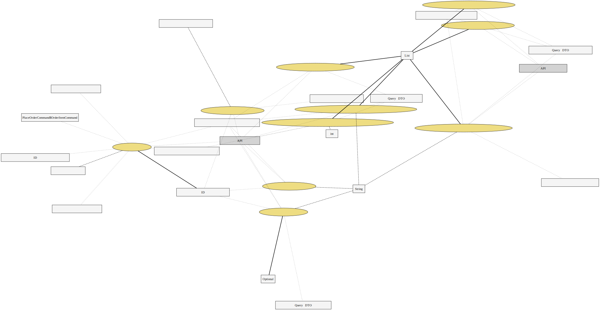
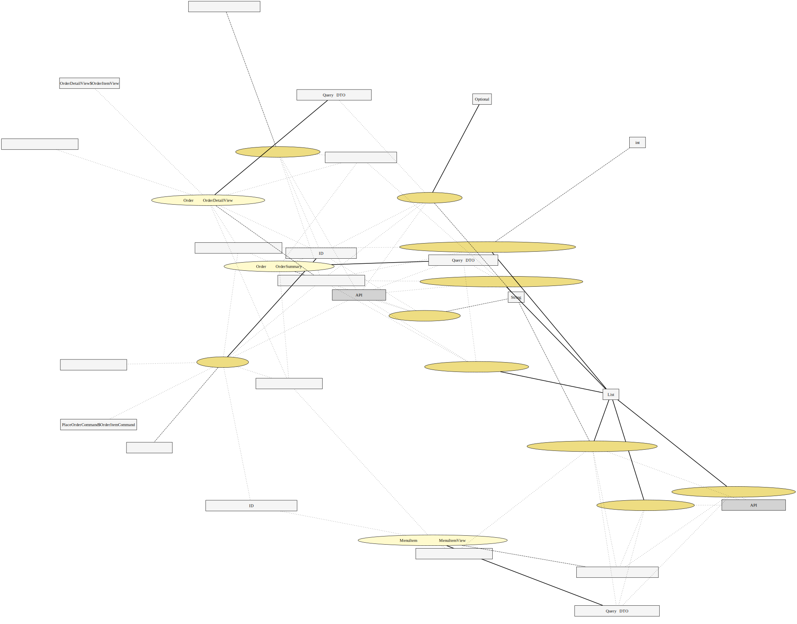

ユースケース複合図（ハンドラ）
{kind=link}
ユースケース複合図
{kind=link}
注文アプリケーションサービス（Command側）
com.example.demo.application.order.OrderApplicationService
注文に関するコマンド（作成・更新・キャンセル）を処理するサービス。 ヘキサゴナルアーキテクチャにおける入力ポートのアダプタとして機能し、 ドメインモデルを呼び出してビジネスロジックを実行する。
責務
- コマンドオブジェクトの受付とバリデーション
- ドメインオブジェクトへの変換と操作の委譲
- リポジトリを介した永続化
注文をキャンセルする
cancelOrder(String):void
- 要求するもの（引数）
- String
注文を作成する
placeOrder(PlaceOrderCommand):OrderId
- 要求するもの（引数）
- 注文作成コマンド
- 得られるもの（戻り値）
- 注文IDを表す値オブジェクト
メニュー項目の存在確認・提供可否チェックを行った上で、 ドメインモデルの注文を作成し永続化する。
注文ステータスを更新する
updateOrderStatus(UpdateOrderStatusCommand):void
- 要求するもの（引数）
- 注文ステータス更新コマンド
ドメインモデルのステータス遷移ルールに従い、 注文のステータスを変更する。
メニュークエリサービス（Query側）
com.example.demo.query.menu.MenuQueryService
メニュー項目に関する参照系の操作を提供するサービス。 CQRSのQuery側として、読み取り専用のDTOを返却する。
責務
- メニュー一覧の取得（カテゴリ別フィルタ対応）
- 提供可能メニューの取得
- ドメインモデルからQuery用DTOへの変換
全メニュー項目一覧を取得する
findAllMenuItems():List<MenuItemView>
- 得られるもの（戻り値）
- List<メニュー項目ビュー（Query用DTO）>
提供可能なメニュー項目一覧を取得する
findAvailableMenuItems():List<MenuItemView>
- 得られるもの（戻り値）
- List<メニュー項目ビュー（Query用DTO）>
お客様向けに表示する場合はこのメソッドを使用する。
カテゴリ別にメニュー項目一覧を取得する
findMenuItemsByCategory(String):List<MenuItemView>
- 要求するもの（引数）
- String
- 得られるもの（戻り値）
- List<メニュー項目ビュー（Query用DTO）>
MenuItemエンティティをMenuItemViewに変換する
toView(MenuItem):MenuItemView
- 要求するもの（引数）
- メニュー項目を表すエンティティ
- 得られるもの（戻り値）
- メニュー項目ビュー（Query用DTO）
注文クエリサービス（Query側）
com.example.demo.query.order.OrderQueryService
注文に関する参照系の操作を提供するサービス。 CQRSのQuery側として、読み取り専用のDTOを返却する。 ドメインモデルを直接返さず、Queryに特化したビュー用DTOに変換して返す。
責務
- 注文一覧の取得（フィルタリング対応）
- 注文詳細の取得
- ドメインモデルからQuery用DTOへの変換
テーブル番号でアクティブな注文サマリー一覧を取得する
findActiveOrdersByTable(int):List<OrderSummary>
- 要求するもの（引数）
- int
- 得られるもの（戻り値）
- List<注文サマリー（Query用DTO）>
全注文のサマリー一覧を取得する
findAllOrders():List<OrderSummary>
- 得られるもの（戻り値）
- List<注文サマリー（Query用DTO）>
注文詳細を取得する
findOrderDetail(String):Optional<OrderDetailView>
- 要求するもの（引数）
- String
- 得られるもの（戻り値）
- Optional<注文詳細ビュー（Query用DTO）>
ステータスで絞り込んだ注文サマリー一覧を取得する
findOrdersByStatus(String):List<OrderSummary>
- 要求するもの（引数）
- String
- 得られるもの（戻り値）
- List<注文サマリー（Query用DTO）>
Order集約をOrderDetailViewに変換する
toDetailView(Order):OrderDetailView
- 要求するもの（引数）
- 注文を表す集約ルートエンティティ
- 得られるもの（戻り値）
- 注文詳細ビュー（Query用DTO）
Order集約をOrderSummaryに変換する
toSummary(Order):OrderSummary
- 要求するもの（引数）
- 注文を表す集約ルートエンティティ
- 得られるもの（戻り値）
- 注文サマリー（Query用DTO）